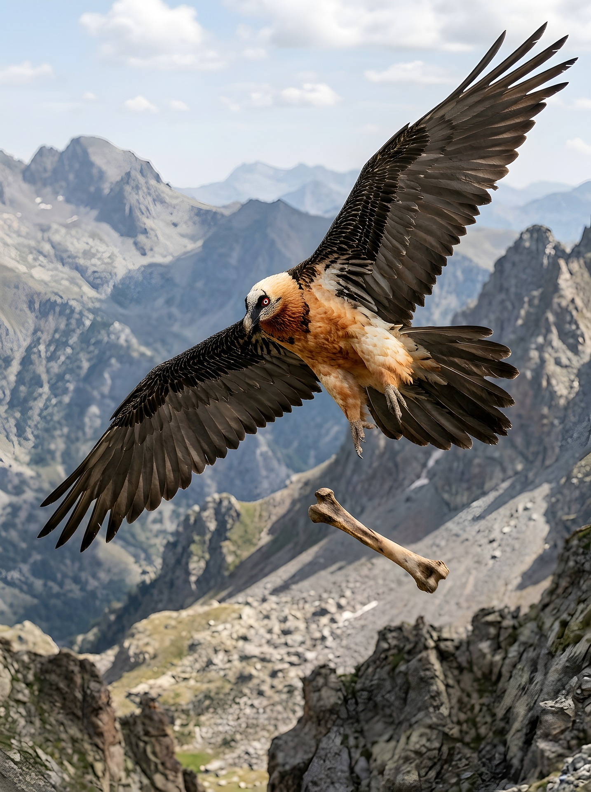
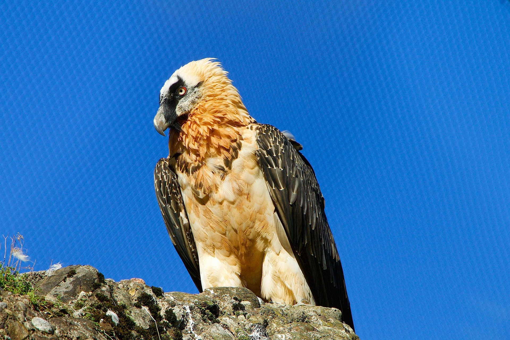
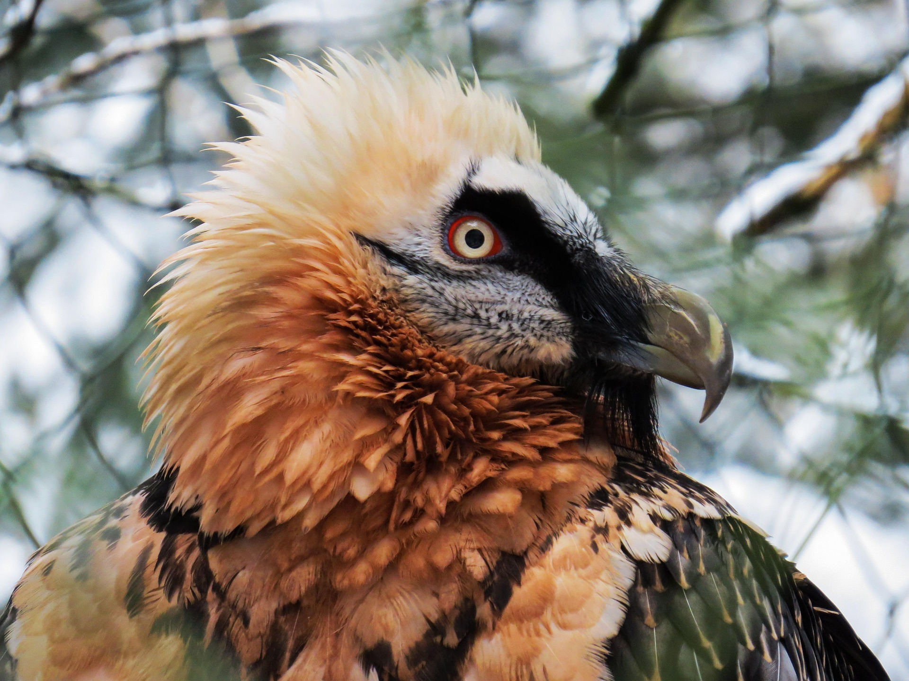
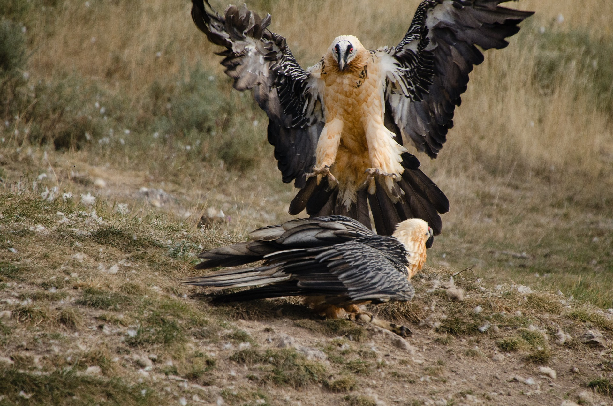

Subiektywnie najciekawsze ptaki na świecie
Orłosęp brodaty (Gypaetus barbatus)




Opis
Te ogromne ptaki były niegdyś powszechne w Europie Południowej i na Bałkanach. Niestety w XX wieku były niemal wytępione przez przesąd, że ptaki te porywają owce i dzieci. O dziwo są to ptaki, które tak naprawdę prawie nie jedzą mięsa (jeśli już to np. żółwie, zające i małe gady) tylko kości. Ich dieta składa się w około 90% z szpiku kostnego. Portafią połknykać i kruszyć kości aby nastepnie ich układ trawienny je rozpuścił. Gdy jednak kości są zbyt duże to podnoszą je na wysokość ponad 100 metrów aby kruszyć je o skały.
Ciekawostki
- Na cześć tego ptaka nazwano asteroidę - nawiązanie do legędy o Humie
- Jest blisko spokrewniony z jastrzębiami i dzielą jedną rodzinę z sępem egipskim
- mają pierzastą szyję co jest nietypowe dla sępów
- wyglądają jakby nosiły dzwony lub oversizowe portki :)